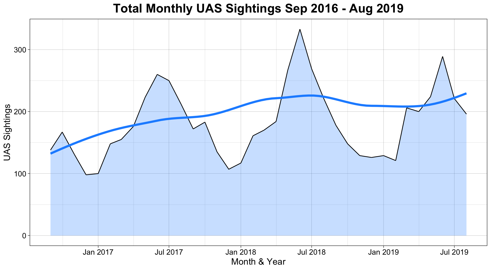
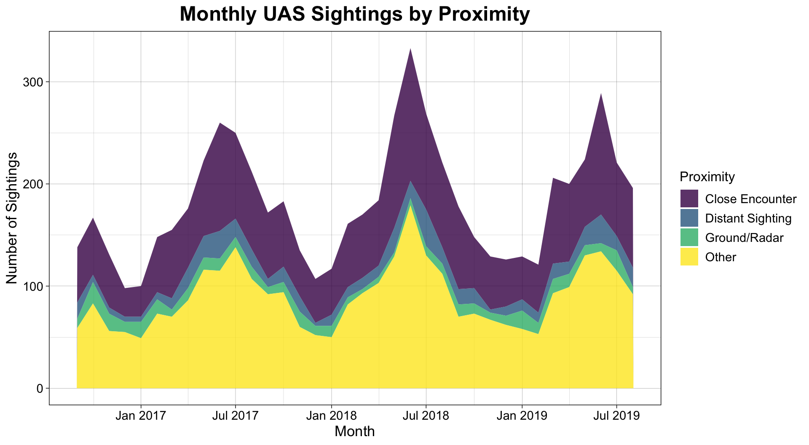
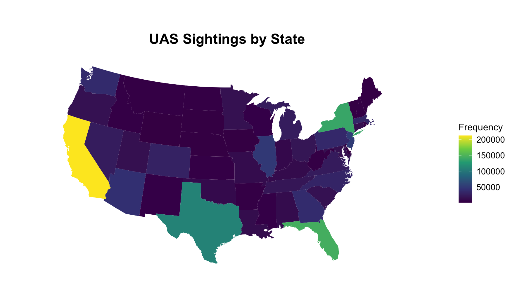
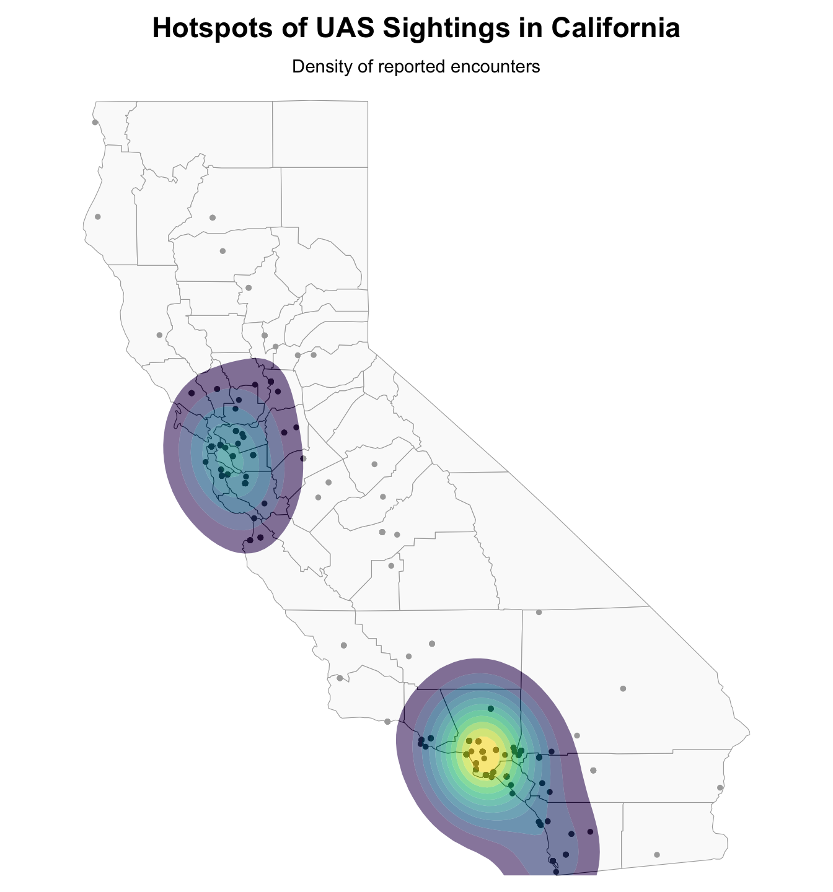
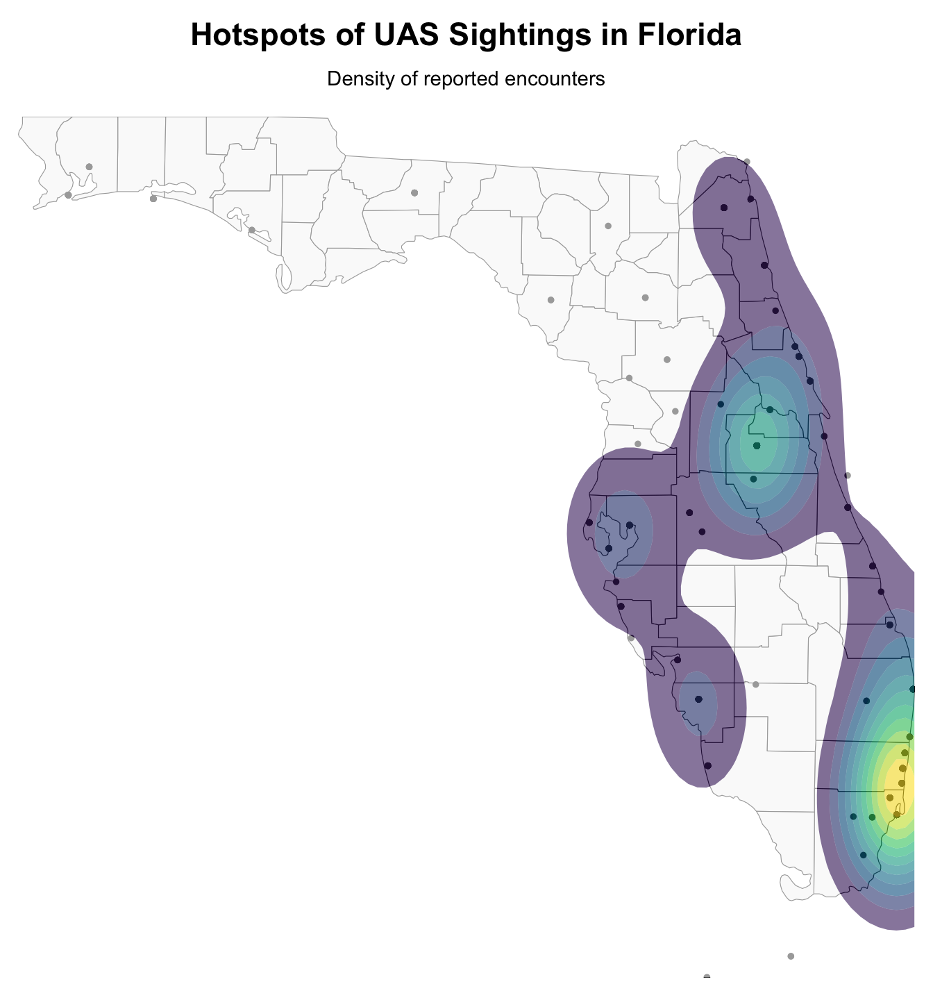

Preface
In the summer of 2018, over 300 unauthorized drone sightings were reported to the FAA in a single month. Pilots flagged unknown objects in commercial airspace, air traffic controllers worked to assess the risk, and in most cases, the drones — and their operators — were never identified.
This is not a hypothetical concern. As consumer and commercial drone adoption has accelerated, so too have encounters between unmanned aircraft systems (UAS) and manned aviation. These incidents range from distant sightings to dangerously close encounters that threaten aircraft safety — and they are concentrated in the nation’s busiest and most complex airspace.
In this analysis, I examine 6,551 UAS sighting reports filed with the FAA between September 2016 and August 2019 to understand when these encounters occur, how close they get, and where in the country the risk is highest.
Dataset Introduction
This analysis uses a research-ready dataset compiled by Wang & Hubbard (2022) from the FAA’s UAS Sighting Reports, published through the Purdue University Research Repository. The original FAA reports consist of brief narrative summaries describing each encounter. The Purdue dataset extracts structured variables from these narratives, supplemented with airport classification data from the National Plan for Integrated Airport Systems (NPIAS).
The dataset includes 6,551 observations, each representing a single reported UAS encounter. The primary variables used in this analysis are Date (constructed from separate month, day, and year fields), State and City (the reported location of the encounter), UAS Sighting (whether a sighting was confirmed), and Distance between Aircraft and UAS (the estimated separation in feet between the drone and the manned aircraft at the time of the encounter).
A key challenge with this dataset is that the distance variable contains a mix of numeric values, descriptive entries (such as “Close”), and missing or non-standard entries. To make this variable analytically useful, I recoded these entries and constructed a Proximity classification: encounters with a reported distance of 1,000 feet or greater are labeled Distant Sightings, those between 1 and 1,000 feet are labeled Close Encounters, entries originally recorded as “N” — representing non-manned-aircraft sightings such as ground-based or radar reports — are categorized as Ground/Radar, and entries recorded as “N/A” — where no distance information was provided — are categorized as Other to preserve the full dataset rather than discard incomplete records. This wrangling step was necessary to transform an inconsistently formatted field into a usable categorical variable.
For the spatial analysis, the dataset provides only city and state names — not geographic coordinates. To map individual sighting locations, I used the tidygeocoder package to convert city names into latitude and longitude values via the OpenStreetMap geocoding API, then filtered out any coordinates that fell outside the expected geographic boundaries.
Finally, it is important to note that these reports are based on pilot and observer estimates rather than radar-verified measurements. The FAA acknowledges that many sightings cannot be independently confirmed. As such, this dataset captures what was reported, not necessarily what was verified — a distinction that matters when interpreting the results.
The Surge: UAS Sightings Over Time
To establish the broader trend, I first examine the total number of confirmed UAS sightings reported each month across the full three-year period. A date variable is constructed from the separate month, day, and year fields using make_date(), then aggregated to the monthly level using floor_date(). A LOESS curve is overlaid to highlight the underlying trajectory [1].
The time series reveals two distinct patterns. First, there is a gradual upward trend in monthly sightings across the period, captured by the LOESS curve. This is consistent with the rapid growth in consumer and commercial drone use during 2016-2019. Second, the data exhibit pronounced seasonality: sightings spike each summer and decline each winter. This likely reflects both increased drone activity during warmer months and improved visual detection conditions. The most dramatic peak occurs in the summer of 2018, when monthly sightings exceeded 300 — the highest concentration in the dataset.
Close Calls: Encounter Proximity Over Time
Not all drone encounters carry the same risk. A drone spotted at a distance is a concern; a drone within a few hundred feet of a commercial aircraft is a potential catastrophe. To distinguish between these scenarios, I classify each encounter by the reported distance between the UAS and the manned aircraft and examine how each category evolves over time.

The stacked area chart decomposes the overall sighting trend by encounter proximity. Close Encounters — those where the drone was reported within 1,000 feet of the aircraft — make up a substantial share of the total and follow the same seasonal pattern observed in the aggregate. Distant Sightings (1,000+ feet) contribute a smaller but consistent layer. A large proportion of reports fall into the Other and Ground/Radar categories — representing encounters where no distance was recorded or where no manned aircraft was involved, respectively. Rather than exclude these observations, they are retained to preserve the full scope of reported UAS activity. Their volume relative to the classified encounters is itself informative: it highlights how often the nature of a drone encounter cannot be meaningfully categorized from the available data.
Where It Happens: A National View
Drone encounters are not evenly distributed across the country. To visualize the geographic concentration of UAS sightings, I map total encounter frequency by state. State abbreviations in the dataset are matched to full state names using state.name and state.abb, converted to lowercase for joining with the maps package [4].

The choropleth reveals a sharp geographic concentration. California and Florida stand out as the two highest-frequency states, followed by New York and Texas. These are states that contain some of the busiest commercial airports in the country and the highest population densities — both of which increase the likelihood of drone encounters being reported. The concentration is not merely a population artifact: these states also contain complex, multi-layered airspace where the consequences of a drone incursion are most severe.
Zooming In: California and Florida
The national choropleth identifies which states are most affected, but it cannot reveal where within those states the encounters are concentrated. To answer this, I focus on California and Florida — the two highest-frequency states — and map individual sighting locations at the city level.
Because the dataset provides city names but not geographic coordinates, I use the tidygeocoder package to look up the latitude and longitude of each unique city via the OpenStreetMap API. After geocoding, results are joined back to the full sighting data and filtered to remove any coordinates that fall outside the expected state boundaries — a necessary step since some city names are ambiguous or produce inaccurate matches. A smoothed density overlay highlights where sightings cluster most heavily [5], [6], [7], [8], [9].

The California density map reveals that sightings are not spread uniformly across the state but cluster tightly around major airport hubs. The highest concentrations appear in the Los Angeles basin and the San Francisco Bay Area — two of the most congested airspace regions in the country.

In Florida, a similar pattern emerges. The densest activity centers on the Miami-Fort Lauderdale corridor and the Orlando-Tampa region, again corresponding to the state’s busiest commercial airspace. Together, these maps confirm that unauthorized drone encounters are not random: they concentrate precisely where the airspace is busiest and where the consequences of an incursion are most severe.
Wrap-Up, Considerations, & Course Connection
Conclusion
Across temporal, categorical, and spatial analyses, a consistent picture emerges. Unauthorized drone encounters in U.S. airspace are growing over time, follow strong seasonal patterns, and are geographically concentrated around the nation’s busiest airports. Among encounters where proximity was reported, a substantial proportion occur within 1,000 feet of manned aircraft — and roughly half of all reports lack a distance estimate entirely, making it impossible to assess severity after the fact.
These findings point to a fundamental limitation in how drone encounters are currently detected and documented. The FAA’s sighting reports capture only what pilots and observers happen to see and report. They cannot account for drones that go undetected, encounters that occur outside of visual range, or activity in airspace where no manned aircraft are present to observe. The true scope of unauthorized UAS activity is almost certainly larger than these data reflect — and the inability to consistently measure encounter severity suggests that current reporting mechanisms alone are insufficient for managing the risk.
Limitations
Several limitations should be acknowledged. First, the dataset relies entirely on self-reported sightings rather than verified detections. Pilots estimate distance and altitude under time pressure, and these values are approximations at best. Second, approximately half of all records lack a reported distance between the aircraft and UAS, which limits the encounter severity analysis to a subset of the data. Third, the proximity thresholds used in this analysis are analytically constructed categories rather than formally defined safety boundaries. Fourth, geocoding city names introduces imprecision — multiple sightings within a city are mapped to the same coordinate point, and some city names may resolve to incorrect locations, requiring boundary-based filtering. Finally, the dataset covers September 2016 through August 2019 and does not reflect more recent trends, including the significant wave of unexplained drone sightings reported along the U.S. East Coast in late 2024.
Future Directions
With additional data or time, several extensions could strengthen this analysis. Incorporating the FAA’s quarterly sighting reports from 2020-2025 would extend the temporal trend and capture the post-pandemic period. Geocoding sightings across all states — not just California and Florida — would enable a complete national spatial analysis at the city level. Fitting a logistic regression model to predict evasive action from encounter characteristics could identify the factors that distinguish routine sightings from dangerous ones. And overlaying sighting locations with data on critical infrastructure — military installations, energy facilities, government buildings — could assess whether unauthorized drone activity clusters near sensitive sites.
Connecting the Visualizations to Course Concepts
The visualizations in this analysis draw on several principles from our data visualization coursework.
The temporal line plot uses a LOESS smoother to separate the long-term trends from month-to-month noise. The shaded area beneath the raw line provides a sense of magnitude, while the smooth curve makes the upward trend and seasonal cycle immediately legible. This reflects the principle that trend visualization should help the reader perceive patterns that raw data alone might obscure.
The stacked area chart encodes two dimensions simultaneously — time on the x-axis and encounter composition through colored layers. This allows the reader to see both the total volume of sightings and the relative proportion of each proximity category at any point in time. The use of a viridis color scale ensures accessibility for readers with color vision deficiencies.
The choropleth map applies spatial encoding to transform a table of state-level counts into an immediately interpretable geographic pattern. By using a continuous viridis color scale on an Albers equal-area projection, the map avoids the visual distortion that can arise from state size differences and ensures that color intensity — not polygon area — drives the reader’s interpretation.
The state-level density maps demonstrate the value of multi-scale visualization. The national choropleth reveals which states are most affected; the California and Florida maps reveal where within those states the encounters concentrate. The density contours (geom_density_2d_filled) provide a smoothed spatial summary that is more informative than raw point clouds alone, particularly in areas with high sighting overlap. This layered approach — from national overview to local detail — exposes patterns that would be invisible at either scale alone.
Citations
[1] Learning_R, “How do I group my date variable into month/year in R?,” Stack Overflow, Oct. 19, 2015. https://stackoverflow.com/questions/33221425/how-do-i-group-my-date-variable-into-month-year-in-r
[2] Z. Bobbitt, “How to Use scale_x_date to Format Dates in R,” Statology, Apr. 01, 2024. https://www.statology.org/scale_x_date-in-r/
[3] H. W. D. N. Pedersen and Thomas Lin, “17 Themes – ggplot2: Elegant Graphics for Data Analysis (3e).” https://ggplot2-book.org/themes.html
[4] S. Senkeresty and S. Senkeresty, “Choropleth Maps in Power BI… with R,” Tiny Lizard, Jun. 20, 2016. https://tinylizard.com/choropleth-maps-power-bi-r/
[5] “Geocoding made easy.” https://jessecambon.github.io/tidygeocoder/
[6] “Getting started.” https://cran.r-project.org/web/packages/tidygeocoder/vignettes/tidygeocoder.html
[7] “Getting started.” https://cran.r-project.org/web/packages/tidygeocoder/vignettes/tidygeocoder.html
[8] “Contours of a 2D density estimate — geom_density_2d.” https://ggplot2.tidyverse.org/reference/geom_density_2d.html
[9] Anthropic, Claude AI, https://claude.ai (used for debugging assistance and code comprehension)
[10] C. Wang and S. M. Hubbard, “Unmanned Aircraft Systems (UAS) Sighting Data 2016 to 2019,” Purdue University Research Repository, 2022. doi:10.4231/H31Y-7197
[11] Federal Aviation Administration (FAA), “UAS Sighting Reports.” https://www.faa.gov/uas/resources/public_records/uas_sightings_report